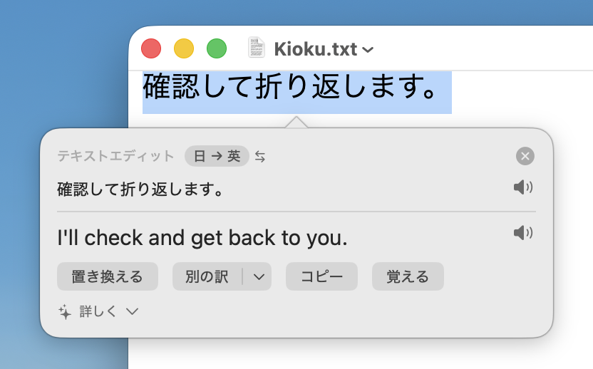
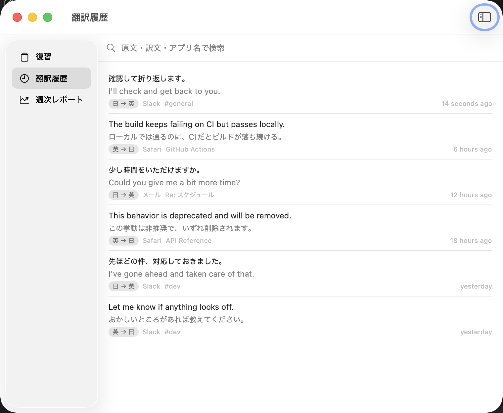
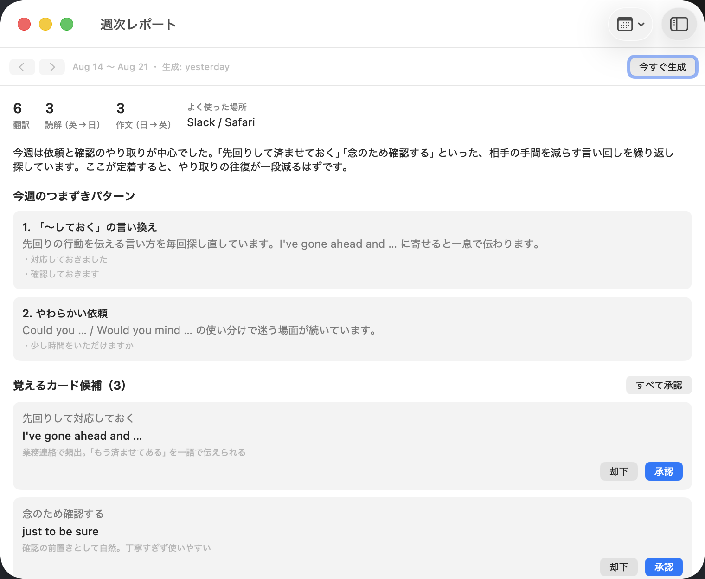
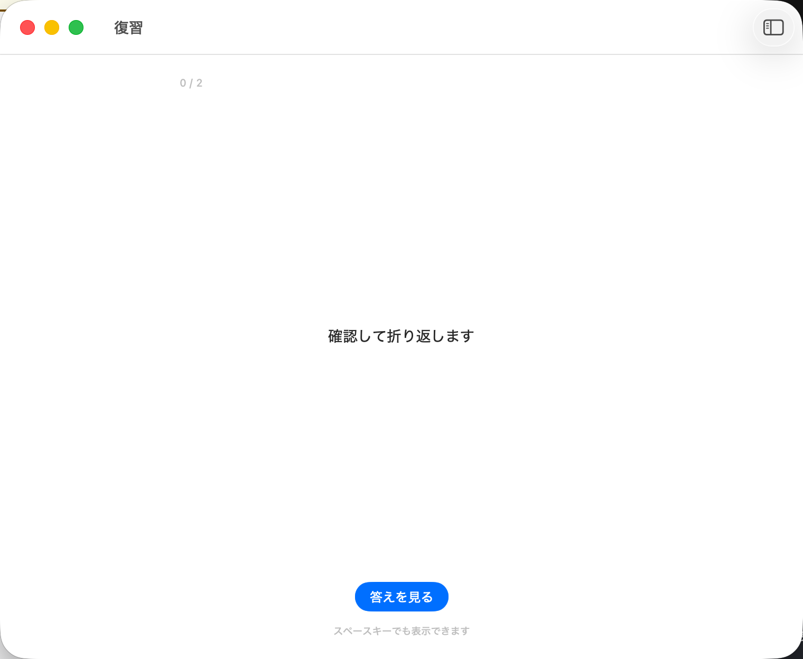

選ぶselect
Select text in any app and a small icon appears. Nothing is sent anywhere until you click it — selecting alone never touches the network.
確認して折り返します。
selected → translated in place
I'll look into it and get back to you.
Kioku translates any text you select on macOS. Your history becomes study material — and each week, AI picks the expressions worth keeping. A menu bar app for Japanese speakers who read and write English every day.

The loop
Select text in any app and a small icon appears. Nothing is sent anywhere until you click it — selecting alone never touches the network.
Writing in English? Select your Japanese draft and Kioku swaps it for the English you pick, right where you were typing. Ask for a different tone — more casual, more formal, shorter — until it sounds right.
Every translation is kept locally, with the app you were in and when. This is the part most tools throw away, and it is the part worth keeping.
Once a week, an AI reads your history, points out the patterns you keep stumbling on, and proposes a handful of flashcards. You approve the ones you want. Nothing becomes a card without your say-so.
Review with spaced repetition — three ratings, twenty cards a day at most, so a session stays under five minutes.
The app



Still with us?
確認して折り返します。
I'll look into it and get back to you.
That is the whole idea. You saw this phrase once at the top of the page, and a minute later you were asked to recall it. Kioku does the same thing with the English you actually run into, spaced out over weeks instead of minutes.
Privacy
Install
Kioku is not notarized yet, so there is no prebuilt download. Build it from source — you run what you can read, and there is no Gatekeeper warning to work around. Requires macOS 26 and Xcode.
brew install xcodegen
git clone https://github.com/dai199/kioku.git
cd kioku
make runKioku needs Accessibility permission to read the text you select, and it cannot ship on the Mac App Store for the same reason. Full setup notes are in the README.